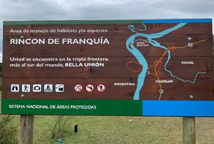
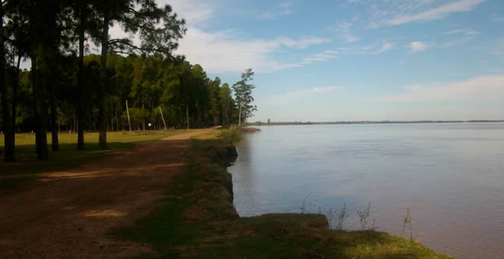
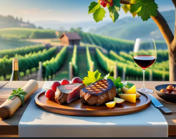

Naturaleza y paisaje
Bella Unión ofrece uno de los paisajes más hermosos y singulares del Uruguay. Situada entre los ríos Uruguay, Cuareim y Miriñaque, presenta playas de arena, islas fluviales y una rica biodiversidad. El Rincón de Franquía es una reserva natural declarada Área Protegida por su valor ecológico. Allí se pueden observar aves autóctonas, bosques ribereños y una flora variada.
Balnearios y actividades
El balneario Los Pinos es uno de los más visitados durante el verano, ofreciendo zonas para acampar, nadar y practicar deportes acuáticos. También son populares las excursiones en bote por el río Uruguay, las caminatas por la costa del Cuareim y los recorridos en bicicleta por las chacras.
Desde Bella Unión es posible cruzar a Monte Caseros (Argentina) por el puente internacional, disfrutando de un intercambio cultural constante. La ciudad también sirve como punto de partida hacia otros destinos turísticos del norte, como las termas de Arapey y Daymán.
Gastronomía y enoturismo
La gastronomía local se caracteriza por su mezcla de sabores uruguayos, brasileños y argentinos. Se destacan los asados al aire libre, las empanadas caseras, los dulces de citrus y las caipirinhas con frutas locales.
En los últimos años ha crecido el enoturismo, con viñedos y bodegas que ofrecen visitas guiadas, catas y maridajes. Esto refleja la nueva etapa de Bella Unión como destino turístico sustentable y de experiencias auténticas.
